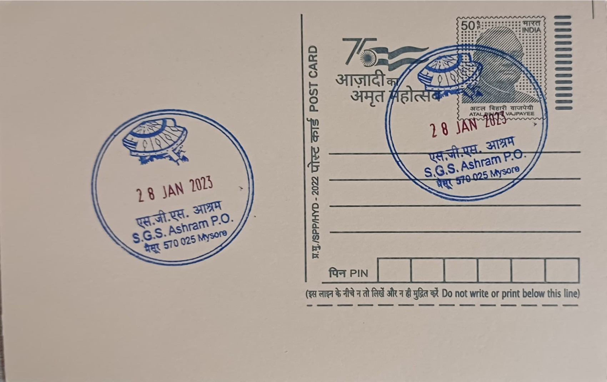

Nada Mantapa
ನಾದ ಮಂಟಪ


Nada Mantapa, literally the "hall of musical tones," is a purpose-built concert auditorium standing within the precincts of the Avadhoota Datta Peetham, the ashram of Sri Ganapathy Sachchidananda Swamiji on the outskirts of Mysuru. The name draws on the Sanskrit word nada, denoting primordial sound and the vibrational basis of music in Indian aesthetic and spiritual thought, paired with mantapa, the traditional term for a pillared hall or pavilion used for congregation and performance. Unlike many such halls that trace their origins to temple or palace patronage, this one was conceived specifically as a modern venue dedicated wholly to music, reflecting its founder-Swamiji's own standing as a trained Carnatic vocalist and composer who sought to give Mysuru's musical culture a permanent architectural home.
The hall is also formally known as the Raga Ragini Samudaya Bhavan, and it functions as the principal auditorium of the ashram's musical and cultural activities, hosting concerts, music festivals, and discourses that draw performers and audiences from across South India. Its significance rests less on any royal or temple lineage and more on its role as an institutional centre for Carnatic music within a contemporary spiritual establishment, a distinction that sets it apart from Mysuru's Wadiyar-era court mantapas even as it draws on the same broader regional tradition that made the city a recognised seat of classical music patronage through institutions such as the Mysore Vidyavardhaka Sangeetha Sabha and the durbar hall concerts of the former royal court.
The auditorium was inaugurated on 31 May 1998 by Sri Ganapathy Sachchidananda Swamiji, who had established the ashram itself in 1966 after moving to the site, then little more than open farmland, on Ooty Road outside the city. Nada Mantapa was built to an unusual fan-shaped plan said to have been inspired by an episode the Swamiji narrated from the Ramayana, in which Hanuman fanned Rama with a large palm leaf while he searched for Sita in the forest, a gesture combining strength with artistic grace that the architects translated into the hall's distinctive palm-leaf silhouette. The completed structure spans roughly 35,000 square feet and was fitted with contemporary acoustic, lighting, and stage systems intended to support large-scale musical productions rather than only small recitals.
A defining feature of the hall is the scale of musical programming it has hosted since opening, including extended festivals such as the Nada Mantapa Raga Sagara series, multi-day gatherings bringing together vocalists, instrumentalists, and dance artists for continuous performance before large audiences drawn from Mysuru and beyond. The ashram has used the venue not only for devotional and classical concerts tied to festivals like Dattatreya Jayanti but also for broader cultural events, giving the hall a dual identity as both a spiritual gathering space and a full-scale performance auditorium within a single institutional campus.
The surrounding Avadhoota Datta Peetham campus is itself notable for other large-scale projects undertaken under the same Swamiji's direction, including Shuka Vana, an aviary and bird rehabilitation centre on the ashram grounds that has been recognised with a Guinness World Record for housing thousands of exotic and endangered bird species, underscoring the ashram's pattern of building expansive, purpose-specific institutions beside its spiritual activities. Nada Mantapa continues to operate as an active concert venue under the ashram's management, regularly booked for music festivals and public performances that keep it in use well beyond the ceremonial occasions for which such halls are sometimes built.
| Date of Introduction | May 31, 2008 |
|---|---|
| Address | Sub Postmaster, |
| S.G.S. Ashram, Mysuru SO, | |
| Mysuru (dt.), Karnataka - 570025. |